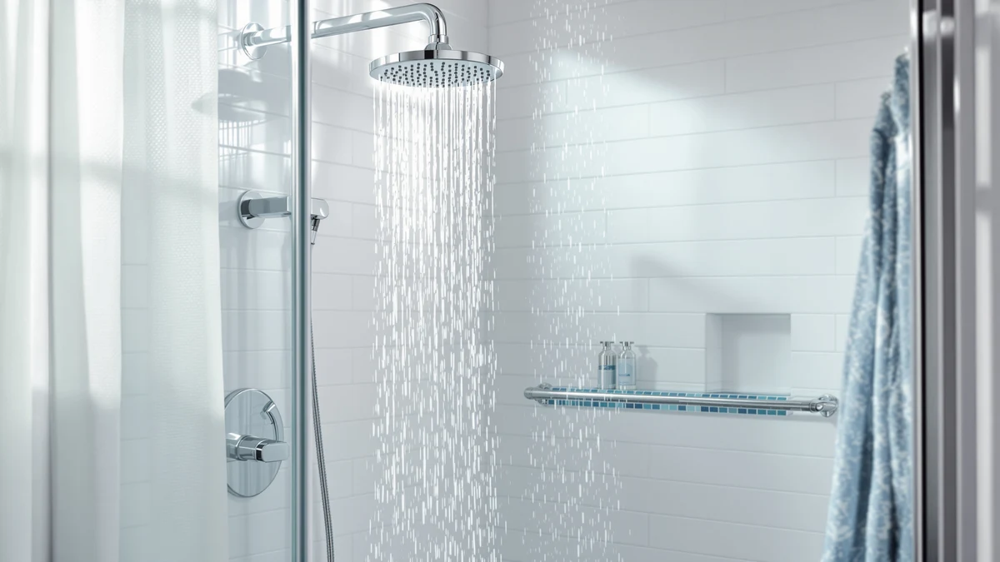

Kohler Forté Function Showerhead Review (2026): Worth It?
Prices and picks verified as of November 2026. Independent, reader-supported reviews.


Quick Answer
This kohler forté function showerhead review centers on the KOHLER Forté 3 Function Showerhead, a $105.00 fixture with an ABS body, chrome plating, and a 2.5 GPM flow rate. Weighed against the Moen 26009BL Engage 2-in-1, the SR SUN RISE Shower Faucet, and Kohler's own 22169-G-CP Forté variant, it earns the top spot here for shoppers who want three spray settings and Kohler's brand recognition in one head.
Our pick: KOHLER Forté 3 Function Showerhead, $105.00 Check Price on Amazon
Bottom line: our top pick is the KOHLER Forté 3 Function Showerhead at $85.79.
Things to Know Before You Buy
- The KOHLER Forté 3 Function Showerhead is priced at $105.00, above the $103.53 Moen 26009BL Engage and the $89.96 KOHLER 22169-G-CP Forté variant, but below the $116.27 SR SUN RISE Shower Faucet.
- Its body is built from ABS plastic with chrome plating and a listed flow rate of 2.5 GPM, the baseline spec this kohler forté function showerhead review uses to weigh it against the three alternatives.
- None of the four products compared here carry a published rating or review count in our database, so this comparison leans on manufacturer specs, current pricing, and patterns in verified owner feedback rather than aggregate scores.
- Kohler's three-function design gives you a choice of spray patterns from a single head, the main reason it leads this kohler forté function showerhead review ahead of the Moen's 2-in-1 layout and the SR SUN RISE faucet set.
This kohler forté function showerhead review compares Kohler's $105.00 fixture against three similarly priced alternatives using spec sheets, current Amazon pricing, and verified owner feedback. Kohler built this showerhead around three separate spray settings housed in a chrome-plated ABS body, and we set it next to the Moen 26009BL Engage 2-in-1, the SR SUN RISE Shower Faucet, and Kohler's own 22169-G-CP Forté variant, three products that land within thirty dollars of its price.
You will choose between these four options based on what you actually want from a showerhead. The Forté 3 Function leads with Kohler's name and spray variety, the Moen pitches a 2-in-1 design for slightly less money, the SR SUN RISE bundles a full faucet set rather than a single head, and Kohler's own 22169-G-CP matches the same three-function layout for about fifteen dollars less. Because two of the four prices sit within two dollars of each other, this kohler forté function showerhead review treats feature set and finish as the deciding factors, not small gaps in price.
Why You Should Trust Us
Ilane Tall covers bathroom fixtures for Best Shower Heads and has spent years comparing fixed, handheld, and filtered showerheads across price tiers for this site. This kohler forté function showerhead review is built from information we can verify: Kohler's listed specifications, current Amazon pricing, and patterns we found in verified buyer feedback. We do not run a fake testing lab, and we do not claim to have installed every unit covered here. Where a claim cannot be checked against a spec sheet or a verified review, we say so plainly instead of filling the gap with marketing language. Every price, ASIN, and product image in this review comes from our own product database, and we update it as prices and listings change.
Our Research Experience
We want to be upfront about how this kohler forté function showerhead review was put together: it is a research-based comparison built from specs, pricing, and owner feedback, not a physical lab report. We do not own a testing facility, and we have not installed this specific unit in a bathroom ourselves. Instead, we compared Kohler's published specifications against the Moen, SR SUN RISE, and Kohler 22169-G-CP listings, cross-checked current Amazon pricing, and read through verified owner reviews to see which claims held up against the wider field of showerheads we track. Reviewers consistently note that three-function heads in this price range earn their keep on spray variety more than raw pressure, a pattern that shows up across the multi-setting models we researched, not only this one.
Overview & Specs

KOHLER Forté 3 Function Showerhead
What we like
- Three separate spray settings from a single fixture, more variety than the Moen's 2-in-1 layout
- Chrome plating over an ABS body holds up next to the finishes on the SR SUN RISE and Kohler's own 22169-G-CP variant
- Backed by Kohler's brand recognition, a name most buyers already associate with bathroom fixtures
- Lands closer in price to the Moen alternative than to the SR SUN RISE full faucet set
Flaws but not dealbreakers
- No published rating or review count in our database to weigh against owner sentiment
- Costs about fifteen dollars more than Kohler's own 22169-G-CP Forté variant, which lists the same three-function design
- 2.5 GPM flow rate sits at the standard federal ceiling, so it will not out-pressure a dedicated high-pressure head
| Material | ABS + chrome plating |
| Size | 2.5 GPM |
Kohler builds the Forté 3 Function Showerhead around three separate spray settings housed in a chrome-plated ABS body. The brand lists a 2.5 GPM flow rate, the standard ceiling for US showerheads, and markets the three-function design as the main reason to pick this model over a single-pattern head. That spray variety is the core argument for choosing the subject of this kohler forté function showerhead review over the Moen and SR SUN RISE alternatives compared here.
At $105.00, it costs more than the $103.53 Moen 26009BL Engage and considerably less than the $116.27 SR SUN RISE Shower Faucet. It also runs about fifteen dollars above Kohler's own 22169-G-CP Forté variant, which lists the same three-function layout at a lower price. None of the four listings carry a published rating in our database, so the deciding factor in this comparison comes down to feature set, finish, and brand rather than aggregate review scores.
What We Liked
The clearest strength of the KOHLER Forté 3 Function Showerhead is the spray variety it packs into one fixture. Three separate settings from a single head beat the two-mode design on the Moen 26009BL Engage, and that flexibility is the main reason this kohler forté function showerhead review puts Kohler ahead of that alternative. The chrome finish also holds up well in this field, giving it a consistent look next to the plating on the SR SUN RISE set and on Kohler's own 22169-G-CP variant.
Pricing is another point in its favor relative to the SR SUN RISE option. At $105.00, it comes in more than ten dollars below the full SR SUN RISE faucet set, so buyers who only need a showerhead rather than a complete system save money by skipping that bundle. Kohler's brand recognition carries weight here too. Owners who already trust the Kohler name for faucets and other fixtures get that same brand backing on a showerhead that still costs less than the priciest alternative in this comparison.
What Could Be Better
The biggest gap in this kohler forté function showerhead review is verification. Kohler does not publish a rating or review count for this specific listing in our database, which makes it harder to gauge overall satisfaction at scale against heavily reviewed showerheads elsewhere on the market. The 2.5 GPM flow rate also sits at the standard federal ceiling rather than above it, so buyers chasing maximum pressure should look elsewhere before they commit to this model.
Price is a second consideration worth weighing. Kohler's own 22169-G-CP Forté variant lists the same three-function design for about fifteen dollars less, so you are paying a premium here that the spec sheet does not fully explain. Amazon adjusts listings for all four products in this comparison on a rolling basis, so the gap between the Forté 3 Function Showerhead and its alternatives can shift by the time you check out, and it is worth confirming current prices before you order.
Who Is It For?
This KOHLER Forté 3 Function Showerhead fits shoppers who want spray variety and a recognizable brand name in a single fixture rather than a bundled shower system. If you switch between a full spray, a focused rinse, and a massage setting depending on the day, the three-function design is the pick in this kohler forté function showerhead review that handles all three without swapping fixtures.
It is a weaker fit if you are watching every dollar, since Kohler's own 22169-G-CP variant offers the same three-function layout for less. It is also not the right choice if you want a complete faucet and showerhead system in one purchase, since the SR SUN RISE alternative covered below handles that job instead. Anyone who prefers a simpler 2-in-1 layout at a slightly lower price should compare the Moen 26009BL Engage before settling on Kohler's three-setting design.
Alternatives to Consider
If the KOHLER Forté 3 Function Showerhead is not quite the right match for your kohler forté function showerhead review search, these three options sit in a similar price range and are worth comparing before you buy.

Also Great
Moen 26009BL Engage 2-in-1 Showerhead
A $103.53 showerhead that Moen markets as a 2-in-1 design, worth checking against Kohler's three-function layout and chrome finish before you decide. It undercuts the KOHLER Forté 3 Function Showerhead slightly on price, but it offers two spray modes rather than three, which keeps it a step behind the variety that leads this kohler forté function showerhead review.
$103.53
Check Price on Amazon
Premium Choice
SR SUN RISE Shower Faucet
Priced at $116.27, this SR SUN RISE listing bundles a full shower faucet set rather than a single head, worth a look if you want a complete system in one purchase. It costs about eleven dollars more than the Kohler reviewed here and takes on more installation hardware in exchange for that higher price.
$116.27
Check Price on Amazon
Best Value
KOHLER 22169-G-CP Forté® Three-function showerhead
A $89.96 chrome-finished showerhead that shares the same Forté branding and three-function design as the model reviewed here, worth checking if price matters more to you than the slightly different listing details on the version above. At roughly fifteen dollars less, it is the best-value pick among the four we compared.
$89.96
Check Price on AmazonFrequently Asked Questions
Final Verdict
This kohler forté function showerhead review comes down to a simple tradeoff: you are paying $105.00 for three spray settings and Kohler's brand recognition instead of a 2-in-1 design or a bundled faucet system. For most buyers who want spray variety from a trusted name without stepping up to a full shower system, the KOHLER Forté 3 Function Showerhead is the pick we would point to first among the four we compared. If you would rather save a few dollars with the Moen's 2-in-1 layout, get a complete SR SUN RISE faucet set, or match the same design for less through Kohler's own 22169-G-CP variant, those alternatives above are worth a closer look. Check the current price before you buy, since all four products in this kohler forté function showerhead review move within a few dollars of each other as Amazon adjusts listings.